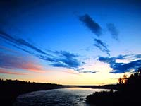
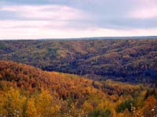
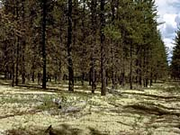
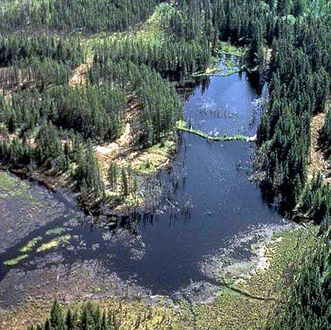
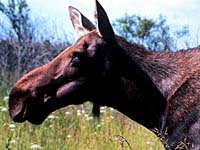
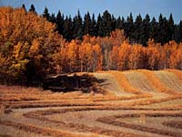

|
Climate:
| Total annual precipitation (mm) |
456 |
| Annual snowfall (cm) |
147 |
| Water deficit (mm) |
180 |
| Mean July temperature (C) |
+16.3 |
| Mean January temperature (C) |
-18.9 |

The climate is subhumid and cool, marked by short, cool summers
and long, cold winters. Although still a subarctic climate, this
region is warmer and moister than the Churchill River Upland
ecoregion.
| |
Landscape:

The
landscape is a rolling glacial plain with loamy glacial till and
outwash sands and gravels. The whole of the region slopes gently
and drains eastward via the Saskatchewan and Churchill rivers
and their tributaries which drain numerous lakes.
|
![[ V F T ]](../../media/stuff/vft_spin.gif)
GPS: 54d 01.24m N, 104d 32.63m W, 1967 feet
12 July 96, 10:30 am, Fuji Velvia 50, F8 1/125s
GPS: 56d 42.36m N, 109d 02.73m W, 1758 feet
06 July 96, 12:30 pm, Fuji Velvia 50, F8 1/30s
GPS: 55d 22.22m N, 107d 55.76m W, 1243 feet
06 July 96, 3:40 pm, Fuji Velvia 50, F8 1/60s
GPS: 52d 34.62m N, 101d 47.39m W, 2354 feet
13 July 96, 7:00 pm, Fuji Velvia 50, F8 1/30s
GPS: 53d 35.11m N, 106d 03.01m W, 1664 feet
11 July 96, 1:50 pm, Fuji Velvia 50, F8 1/250s
GPS: 53d 30.97m N, 102d 24.41m W, 1412 feet
16 July 96, 2:00 pm, Fuji Velvia 50, F11 1/60s
Soil:

The soils vary, loamy, clayey and sandy soils can be found.
|
Vegetation:

Forest fires have altered the vegetation
of this region, as evidenced by the limited amount of white spruce
and balsam fir and the prevalence of the fire-adapted aspen, pine
and black spruce. The forest is a mixture of coniferous and
deciduous trees. Balsam poplar, trembling
aspen and white birch are the main deciduous trees. with American
elm, Manitoba maple and green ash occurring in some areas. Deciduous
species tend to be less abundant in the eastern section of the
region. Where they occur, there is a dense understory of shrubs and herbs. Peat moss and Labrador
tea are associated with black spruce. Reindeer moss, a lichen,
can be found in mixed stands of black spruce and jack pine in
moist areas. There are also treeless, wet sedge fens. Common shrubs
include honeysuckle, elderberry, green alder, mountain maple,
willow, blueberry and bearberry. Common plants are bunchberry,
twinflower, sarsaparillas dewberry, horsetail and ostrich fern.
Grasses are also common.
|
Wildlife:

Large numbers of moose (shown left) inhabit the area, along with black bear, white-tailed deer, elk,
muskrats and waterfowl. This productive forest area hosts a great
abundance and variety of all fur bearers. Bird diversity is relatively
low.
|
Human Use:

Significant pulp wood and local saw log forestry,
trapping and hunting are the dominant land uses. The
land is also used for commercial and sport fishing, rural
residences, roads, municipal and recreation developments, ranching,
farming, community pastures and mineral development. Arable agriculture
is limited to small holdings on clayey soils in the lowlands along
rivers and streams where drainage has been improved.
|
|